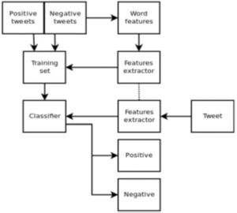
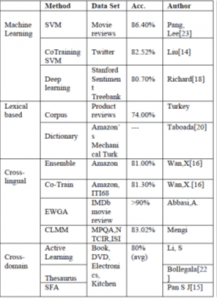

Data publicării: 15.12.2016
Autor articol: Adrian Iftene
Introducere
Trăim într-o perioadă în care volumul datelor existente pe Internet crește constant de la o zi la alta, o bună parte din aceste date provenind din rețelele sociale, care au început să fie din ce în ce mai folosite. Rețele sociale precum Twitter, Facebook, Google+ au crescut rapid în popularitate, iar utilizatorii le folosesc pentru a-și exprima opiniile în legătură cu subiecte de interes, pentru a face parte din comunități sau pentru a posta mesaje ce sunt vizibile peste tot în lume. S-a lucrat foarte mult în ultimii ani la identificarea sentimentelor în datele existente pe Internet și în particular în identificarea sentimentelor pe Twitter.
Analiza sentimentelor pe Twitter
În articolul “Sentiment Analysis of Twitter Data: A Survey of Techniques” (Kharde și Sonawane, 2016), autorii prezintă principalele tehnici folosite în identificarea sentimentelor în datele existente pe Twitter. Studiul celor doi indieni prezintă cum tehnicile existente procesează aceste tweets pentru a le clasifica în pozitive, negative sau neutre. Tehnicile existente bazate pe algoritmi de învățare automată (Naive Bayes, Max Entropy și SVM), sau abordări bazate pe exploatarea lexicoanelor sunt prezentate, analizate și comparate. De asemenea, sunt prezentate provocările care pot apare și modalitățile în care aceste informații pot fi exploatate.
Structura lucrării
Materialul din lucrarea (Kharde și Sonawane, 2016) este structurat pe 10 părți:
Introducerea vorbește despre modul în care Internetul a schimbat modul în care oamenii își expun opiniile și părerile, în principal prin intermediul blog-urilor, forum-urilor, site-urilor cu recenzii, media socială, etc. Sunt milioane de oameni, care folosesc rețele sociale, precum Facebook, Twitter, Google+, pentru a-și arăta emoțiile, opiniile și pentru a împărtăși ce fac zilnic în viața personală. Similar, companiile sau comunitățile on-line își informează clienții sau membrii despre ultimele noutăți sau oferă sprijin celor ce au nevoie. Toate aceste date sunt bogate în sentimente și pot fi exploatate corespunzător de cei interesați pentru a lua decizii, de exemplu, fie de a cumpăra sau nu un produs (din punct de vedere al consumatorilor), fie de a continua sau nu o promovare de produs (din punct de vedere al companiilor), fie de a face un produs conform așteptărilor clienților, care-l folosesc.
Capitolul 2 e dedicat analizei de sentimente, pe care autorii o definesc ca un proces automat de identificare a atitudinilor, opiniilor, părerilor și emoțiilor din resurse textuale, vorbite sau chiar baze de date, folosind tehnici din inteligența artificială, dedicate procesării limbajului natural (NLP – Natural language processing). Analiza de sentimente presupune clasificarea opiniilor din text în categorii precum “pozitiv”, “negativ” și “neutru”. Autorii fac diferențe între opinii, păreri, crezuri și sentimente, și dau exemple din fiecare din acestea. După trimiteri la principalele abordări existente, autorii prezintă etapele principale necesare identificării de sentimente:
Pre-procesarea datelor;
Extragere de trăsături;
Antrenare;
Clasificare.
În următoarea secțiune, sunt trecute în revistă principalele abordări utilizate în analiza de sentimente. Se trece de la tehnici bazate pe învățare automată (învățare nesupervizată, învățare supervizată) la tehnici bazate pe lexicoane (bazate pe dicționare sau pe corpusuri adnotate). Analizând performanțele sistemelor existente, se ajunge la concluzia că abordările bazate pe SVM sunt cele mai performante.
Capitolul 4, prezintă mai în detaliu ce înseamnă să facem analiză de sentimente. Analiza de sentimente implică mai multe domenii, precum procesare de limbaj natural, web mining și învățare automată. Ca și etape intermediare, analiza de sentimente implică:
Clasificarea subiectivității;
Clasificarea sentimentelor;
Identificarea obiectelor despre care se vorbește și a caracteristicilor acestora;
Identificarea proprietarului obiectelor și a opiniilor acestuia despre acestea.
Secțiunea 5, enumeră nivelurile la care se poate face analiză de sentimente: la nivel de document, la nivel de frază sau propoziție, la nivel de obiect sau trăsătură, la nivel de cuvânt. Pentru fiecare din acestea, se prezintă abordările generale și cele particulare.
Secțiunile 6 și 7, conțin modul în care se face evaluarea sistemelor care fac analiză de sentimente, rezultatele care s-au obținut și o analiză a acestora. Se trece pe rând de la algoritmi bazați pe Naive Bayes, la algoritmi care elimină cuvintele de tip stop-word, la algoritmi care folosesc unigrame, bigrame, sau trigrame.
Secțiunea 8, analizează dificultățile ce se întâlnesc în identificarea de sentimente: identificarea faptului că un cuvânt are sau nu are sentimente asociate, dependența de domeniul documentului, detectarea sarcasmului, dublul înțeles, negații, recunoaștere de entități de tip nume, comparațiile, internaționalizare.
În secțiunea dedicată aplicațiilor analizei de sentimente, întâlnim enumerate aplicații care folosesc recenziile de pe site-urile web, aplicații care au componente incluse ce fac analiză de sentimente, aplicații folosite în business intelligence, aplicații inter-disciplinare, aplicații folosite în IoT (Internet of things).
Ultima secțiune dedicată concluziilor, face o trecere în revistă a elementelor care apar în lucrare, iar bibliografia conține cele 24 de lucrări citate în lucrare.
Terminologie și notații
În lucrarea (Kharde și Sonawane, 2016), autorii consideră că opinia, sentimentul, părerea, credința sunt foarte asemănătoare, dar există diferențe între ele. Astfel avem următoarea descriere pentru fiecare din ele:
Opinia: o concluzie deschisă la discuții (deoarece diverși experți au diferite opinii);
Părere: o opinie subiectivă;
Credință: o acceptare deliberată combinată cu consimțământ intelectual;
Sentiment: o opinie ce reprezintă ce simte cineva.
Un exemplu cu elemente din terminologia analizei de sentimente este dat mai jos:
<SENTENCE> Subiectul filmului este slab și plictisitor.
<OPINION HOLDER> =<autor>
<OBJECT> = <film>
<FEATURE> = <subiect>
<OPINION >= <slab><plictisitor>
<POLARITY> = <negativ>
Matematic putem reprezenta o opinie ca o 5-uplă (o, f, so, h, t), unde
o = obiect;
f = trăsătura obiectului o;
so = orientarea sau polaritatea opiniei pe trăsătura f a obiectului o;
h = proprietarul opiniei;
t = timpul când opinia a fost exprimată.
Obiect: O entitate care poate fi persoană, eveniment, produs, organizație, sau topică.
Trăsătură: Un atribut (sau o parte) a obiectului pentru care facem evaluarea.
Orientarea sau polaritatea opiniei: Orientarea unei opinii pe o trăsătură f, reprezintă momentul când opinia este pozitivă, negativă sau neutră.
Deținătorul opiniei: Deținătorul opiniei este o persoană sau organizație sau o entitate care exprimă opinia.
Tehnici folosite în identificarea de sentimente pe Twitter
În ultimii ani s-au realizat o mulțime de activități de cercetare în domeniul “Analizei de sentimente pe Twitter”. În faza de început s-a făcut ca o clasificare binară, care asocia opiniile sau părerile doar la două clase: pozitive sau negative.
Pak și Paroubek (2010) au propus un model de clasificare a tweets în obiective, pozitive și negative. Ei au creat un corpus de tweets folosind Twitter API și adnotând automatic aceste tweets folosind emoticons. Folosind acest corpus, ei au dezvoltat un clasificator de sentimente bazat pe multinomial Naive Bayes ce folosește trăsături ca N-grame și tag-uri de tip POS (Part-of-Speech). Colecția de antrenament folosită de ei a fost mai eficientă decât cea care se baza doar pe emoticons.
Parikh și Movassate (2009) au implementat două modele, unul bazat pe modelul cu bigrame Naive Bayes și unul ce folosește Entropia Maximă pentru a clasifica tweets. Ei au demonstrat că clasificatorul bazat pe clasificatorul Naive Bayes merge mai bine decât modelul bazat pe Entropia Maximă.
Go și Huang (2009) au propus o soluție pentru analiza de sentimente a datelor de pe Twitter folosind algoritmi de supervizare de la distanță, în care datele de antrenament au fost tweets cu emoticons, acestea fiind considerate ca date cu zgomot. Ei au construit un model folosind Naive Bayes, MaxEnt și SVM (Support Vector Machines). Spațiul de trăsături conține unigrame, bigrame și POS. Ei au demonstrat că SVM e cel mai bun, iar unigramele sunt cele mai eficiente ca trăsături.
Barbosa et al. (2010) au modelat o metodă automată pentru a clasifica tweets. Ei clasifică tweets ca obiective sau subiective și apoi în faza a doua, tweets subiective sunt clasificate ca pozitive sau negative. Spațiul de trăsături includ retweets, hashtags, link, semne de punctuație și semnul mirării în combinație cu trăsături ca polaritatea cuvintelor și POS.
Bifet și Frank (2010) au folosit fluxul de date de pe Twitter oferit de Firehouse API, care oferă toate mesajele de la fiecare utilizator în timp real. Ei au făcut experimente folosind multinomial naive Bayes, gradient stocastic descendent și arborele Hoeffding. Ei au ajuns la concluzia că modelul bazat pe SGD, când e folosit de o rată de învățare potrivită este cea mai bună.
Agarwal et al. (2011) au dezvoltat un model de clasificare în 3-clase: pozitiv, negativ și neutru. Ei au făcut experimente cu modele bazate pe unigrame, bazate pe trăsături și bazate pe arbori. Pentru modelul bazat pe arbori, ei au reprezentat un tweet ca un arbore. Modelul bazat pe trăsături folosește 100 trăsături și modelul bazat pe unigrame folosește 10,000 trăsături. Ei au ajuns la concluzia că trăsăturile care combină polaritatea cuvintelor cu POS sunt cele mai importante și joacă un rol major în clasificare. Modelul bazat pe arbori a fost mai bun decât celelalte.
Davidov et al., (2010) au propus o abordare ce folosește hash-tag-urile Twitter definite de utilizator, semnele de punctuație, cuvintele, n-grame și șabloane de diverse trăsături, care sunt mai apoi combinate într-un singur vector de trăsături pentru a face clasificarea sentimentelor. Ei au folosit strategia kNN (k-Nearest Neighbor) pentru a eticheta cu sentimente, prin construirea unui vector de trăsături pentru fiecare exemplu din datele de test.
Po-Wei Liang et al. (2014) au folosit API-ul de la Twitter pentru a colecta date. Datele lor de antrenament au fost puse în trei categorii (camera, film, mobil). Datele sunt etichetate ca pozitiv, negativ și fără opinie. Tweets ce conțin opinii au fost selectate. Modelul bazat pe unigrame Naive Bayes a fost implementat. Ei au eliminat trăsături inutile folosind Informația Mutuală și metoda Chi bazată pe pătrate. În final, un tweet e clasificat pozitiv sau negativ.
Pablo et al. au prezentat clasificatori bazați pe Naive Bayes pentru a detecta polaritatea tweets pe limba engleză. Două variante diferite de clasificatori Naive Bayes au fost denumite Baseline (antrenat pentru a clasifica tweets ca pozitive, negative și neutre), și Binar (care utilizează un lexicon cu polarități și clasifică ca pozitiv și negativ, cele neutre fiind neglijate). Trăsăturile considerate de clasificator sunt lema (pentru substantive, verbe, adjective și adverbe), lexicoane cu polarități, și expresii multi-cuvânt din diverse surse și modificatori de valență.
Turney et al. au folosit metode bazate pe “bag-of-words” pentru a face analiză de sentimente în care relațiile dintre cuvinte nu sunt luate în calcul, iar documentul este reprezentat ca o colecție de cuvinte. Pentru a determina sentimentul din tot documentul, se determină sentimentele pentru fiecare cuvânt și apoi se folosesc funcții de agregare a acestor valori.
Kamps et al. 2004 folosesc baze de date lexicale precum WordNet pentru a determina conținutul emoțional al unui cuvânt într-un spațiu multi-dimensional. Ei au dezvoltat o distanță pe WordNet și au determinat polaritatea semantică a adjectivelor.
Xia et al. 2011 au construit o platformă pentru clasificarea sentimentelor care combină diverse trăsături și tehnici de clasificare. Pentru asta, ei au folosit două tipuri de informație (POS și relații între cuvinte) și trei clasificatori de bază (Naive Bayes, Maximum Entropy și Support Vector Machines).
Luo et al. 2013 au adus în atenție dificultățile pe care le întâlnim când vrem să clasificăm tweets. Spam-ul și varietatea de limbi existente pe Twitter fac activitatea de identificare a opiniilor foarte dificilă.
Un model general pentru identificarea și clasificare a sentimentelor este prezentat în Figura 1.a stânga.


Din punct de vedere al performanțelor măsurate, precum precizie și recall, putem vedea în Figura 1.b în dreapta o comparație între tehnicile existente pentru identificarea de sentimente, incluzând învățare automată, abordări bazate pe lexicoane, abordări multi-domeniu și multi-lingve.
Concluzii
Analiza datelor de pe Twitter este din ce în ce mai folosită (Kharde și Sonawane, 2016), (Kumar et al., 2013), (Rani et al., 2016), (Borruto, 2015), în analiza de sentimente (Pak și Paroubek, 2010), (Parickh și Movassate, 2009), (Go et al., 2009), (Barbosa și Feng, 2010), (Bifet, 2010), (Agarwal et al., 2011), (Davidov, 2010), (Liang și Dai, 2013), (Gamallo și Garcia, 2014), (Neethu și Rajashree, 2013), (Turney, 2002), (Kamps et al., 2004), (Xia et al., 2011), (Luo et al., 2013), (Kharde și Sonawane, 2016), (Nakov et al., 2016), în identificarea opiniilor politice (Funk, 2011), (Tolosi, 2016), în identificarea rapidă a evenimentelor care apar în lume (Weller et al., 2011), (Jenders et al., 2013), a fenomenelor naturale în curs de desfășurare (Sakaki et al., 2013), în măsurarea gradului de satisfacție a populației asupra serviciilor oferite în sănătate (Ali et al., 2013). Tehnicile folosite implică învățare automată, folosirea de dicționare cu termeni specifici unui domeniu pe care dorim să-l monitorizăm, clasificatori Naive Bayes, modele bazate pe Entropie Maximă și SVM. Toate acestea sunt folosite în combinație cu tehnici și unelte specifice procesării limbajului natural: POS, eliminare de cuvinte de tip stop-word, identificare de entități de tip nume, identificare de sentimente, etc.
Cred că pe viitor exploatarea datelor existente pe rețelele sociale va fi din ce în ce mai des folosită, pentru aflarea opiniilor utilizatorilor, pentru a stabili planuri și strategii de marketing, pentru a ne ajuta să ne decidem atunci când vrem să cumpărăm ceva, pentru a ne ajuta în caz de nevoie și de pericol, etc. De aceea, pe viitor crearea unei aplicații oricât de mici, trebuie să ia în calcul existența acestor informații și exploatarea lor.
Referințe bibliografice
- Agarwal, B., Xie, I., Vovsha, O., Rambow, R. Passonneau. (2011) Sentiment Analysis of Twitter Data. In Proceedings of the ACL 2011, Workshop on Languages in Social Media, pp. 30-38.
- Ali, A., Magdy, W., Vogel, S. (2013) A Tool for Monitoring and Analyzing HealthCare Tweets. HSD 2013, pp. 23-26.
- Barbosa, L., Feng, J. (2010) Robust Sentiment Detection on Twitter from Biased and Noisy Data. COLING 2010: Poster Volume, pp. 36-44.
- Bifet, Frank, E. (2010) Sentiment Knowledge Discovery in Twitter Streaming Data. In Proceedings of the 13th International Conference on Discovery Science, Berlin, Germany: Springer, pp. 1-15.
- Borruto, G. (2015) Analysis of tweets in Twitter. Webology, 12 (1), June, 2015.
- Davidov, D., Rappoport, A. (2010) Enhanced Sentiment Learning Using Twitter Hashtags and Smileys. Coling 2010: Poster Volume pp. 241-249, Beijing, August 2010.
- Gamallo, G., Garcia, M. (2014) Citius: A Naive-Bayes Strategy for Sentiment Analysis on English Tweets. 8th International Workshop on Semantic Evaluation (SemEval 2014), Dublin, Ireland, Aug 23-24, pp 171-175.
- Go, R., Bhayani, L., Huang. (2009) Twitter Sentiment Classification Using Distant Supervision. Stanford University, Technical Paper, 2009.
- Jenders, M., Kasneci, G., Naumann, F. (2013) Analyzing and predicting viral tweets. In Proceedings of the 22nd International Conference on World Wide Web (WWW ’13 Companion). ACM, New York, NY, USA, 657-664.
- Jhansi Rani, T., Anuradha, K., Vijayapal Reddy, P. (2016) A Mixed Approach for Data and Sentiment Analysis on Twitter. International Journal of Advanced Research in Computer and Communication Engineering. 5 (6), June 2016.
- Kamps, J., Marx, M., Mokken, R. J., De Rijke, M. (2004) Using wordnet to measure semantic orientations of adjectives. 2004.
- Kharde, V. A., Sonawane, S. S. (2016) Sentiment Analysis of Twitter Data: A Survey of Techniques. International Journal of Computer Applications (0975 – 8887), 139 (11), April 2016, pp. 5-15.
- Kumar, S., Morstatter, F., Liu, H. (2013) Twitter Data Analytics. Springer Publishing Company, Incorporated.
- Liang, P.W., Dai, B.R. (2013) Opinion Mining on Social Media Data. IEEE 14th International Conference on Mobile Data Management, Milan, Italy, June 3 – 6, pp 91-96.
- Luo, Z., Osborne, M., Wang, T. (2013) An effective approach to tweets opinion retrieval. Springer Journal on World Wide Web, Dec 2013, DOI: 10.1007/s11280-013-0268-7.
- Maynard, D., Funk, A. (2011) Automatic detection of political opinions in Tweets. Proceedings of the 8th International Conference on The Semantic Web, pp. 88- 99, Heraklion, Crete, Greece.
- Nakov, P., Ritter, A., Rosenthal, S., Sebastiani, F., Stoyanov, V. (2016) SemEval-2016 Task 4: Sentiment Analysis in Twitter. Proceedings of the 10th International Workshop on Semantic Evaluation, SemEval@NAACL-HLT 2016, San Diego, CA, USA, June 16-17, pp. 1-18.
- Neethu, M. S., Rajashree, R. (2013) Sentiment Analysis in Twitter using Machine Learning Techniques. 4th ICCCNT 2013, at Tiruchengode, India. IEEE – 31661.
- Pak, A., Paroubek. P. (2010) Twitter as a Corpus for Sentiment Analysis and Opinion Mining. In Proceedings of the Seventh Conference on International Language Resources and Evaluation, pp.1320-1326.
- Parikh, R., Movassate, M. (2009) Sentiment Analysis of User- Generated Twitter Updates using Various Classification Techniques. CS224N Final Report, 2009.
- Sakaki, T., Okazaki, M., Matsuo, Y. (2013) Tweet Analysis for Real-Time Event Detection and Earthquake Reporting System Development. IEEE Trans. on Knowl. and Data Eng. 25, 4 (April 2013), pp. 919-931.
- Tolosi, L. (2016) More Twitter Users Want to Split with EU and Support Brexit. http://ontotext. com/twitter-users-support-brexit/?sro_p=0&sro_q=951
- Turney, P. D. (2002) Thumbs up or thumbs down?: semantic orientation applied to unsupervised classification of reviews. In Proceedings of the 40th annual meeting on association for computational linguistics, pp. 417–424, Association for Computational Linguistics.
- Xia, R., Zong, C., Li, S. (2011) Ensemble of feature sets and classification algorithms for sentiment classification. Information Sciences: an International Journal, 181 (6), pp. 1138–1152.
- Weller, K., Dröge, E., Puschmann, C. (2011) Citation Analysis in Twitter: Approaches for Defining and Measuring Information Flows within Tweets during Scientific Conferences. MSM2011, 1st Workshop on Making Sense of Microposts, pp. 1-12.